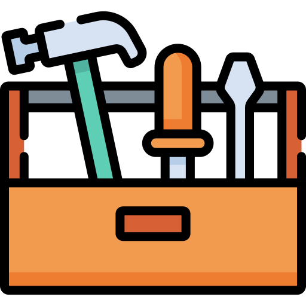

GERENCIAMENTO OS
Gerencie todas as suas ordens de serviços em um só lugar!
Um sistema de gerenciamento de Ordens de Serviço (OS) organiza e controla
todas as atividades de atendimento de uma empresa, permitindo cadastrar
clientes, registrar serviços solicitados, acompanhar o status de cada ordem
(aberta, em andamento ou finalizada) e gerar relatórios. Ele ajuda a
centralizar informações, agilizar processos, evitar esquecimentos e
melhorar o controle financeiro e operacional do negócio.

Cadastro de Clientes
Registre e gerencie todos os
seus clientes facilmente.

Abertura de OS
Crie ordens de serviço rapidamente para cada atendimento.
Controle de Status
Acompanhe se a OS está aberta,
em andamento ou finalizada.
Histórico de Atendimentos
Visualize todo o histórico de serviços realizados.
Controle Financeiro
Gerencie valores, orçamentos e pagamentos de forma prática.
Busca rápida de OS
Encontre qualquer ordem de serviço em segundos.
Comece a monitorar agora!
Você esta a um botão de aumentar o desempenho da sua empresa.